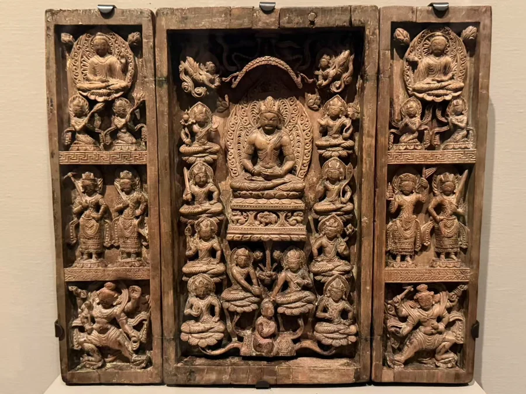

OBJECT NOTE
毗卢遮那与八大菩萨旅行佛龛
8—9世纪

中央与侧翼的关系；木质结构的开合方式。
现场展签列克什米尔或高昌；现行馆录的文化栏为Chinese。克什米尔风格与具体产地是两个问题，这里保留两处候选归属。
作品资料
- 原题名
- Traveling Shrine with Vairocana and Eight Bodhisattvas
- 年代
- 8—9世纪
- 材料
- 木，残彩与金
- 尺寸
- 展开：31.75 × 35.88 × 6.67厘米（据纳尔逊馆录）
- 收藏／展出
- 纳尔逊—阿特金斯艺术博物馆
- 馆藏号
- 44-18
- 地区与传统
- 克什米尔（风格联系／候选制作地区）；高昌／吐鲁番候选地区（候选制作地区）
现场资料
基本资料依据现场展签整理。Traveling Shrine with Vairocana and Eight Bodhisattvas；馆藏号 44-18。
现场展签列克什米尔或高昌；现行馆录的文化栏为Chinese。克什米尔风格与具体产地是两个问题，这里保留两处候选归属。
资料与来源
作品基本资料据现场展签及下列馆方记录整理；文字中的观看描述基于这里的现场照片。